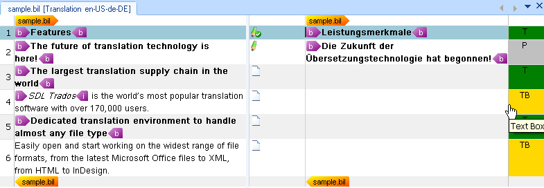

Adding Context Information
This section explains how to extract useful context information from a BIL file.
About Contexts
Translators often need to know whether a segment appears in a heading, paragraph, or another document element. In the BIL sample format, a unit can contain a type element that identifies this context:
<type spec="Heading"/>
Trados Studio can display this information in a column next to the target segments. In this section, you enhance the parser so that Trados Studio shows the type element information in the editor.
The following example shows how the translation environment can display context information. Each context cell contains a display code, which abbreviates the full context, for example T for Topic. You can also assign a different color to each context type to help translators identify them quickly.

The API lets you create custom context information from the BIL file or use standard context types. These standard types cover common document elements such as titles, paragraphs, and text boxes.
For simplicity, this example uses three mapping scenarios. The following table lists the BIL type values and the corresponding standard context types:
| BIL Type |
Standard Context Type |
| Heading |
Topic |
| Box |
Text Box |
For this implementation, assume that when a unit in the BIL file does not contain a type element, the parser uses the standard paragraph context type.
In addition to the type element, you can use context information to store the unique ID of each unit in the BIL file. The unit element contains this value in its id attribute. Do not display this ID to end users because it is not relevant during translation. Instead, store it in the intermediary SDLXLIFF file so that the writer class can reference it later when it generates the target BIL file. For more information, see Adding the File Writer Class. You can store this kind of hidden information as metadata in the context properties.
You can add metadata to more than contexts. You can also apply it to inline tags, structure tags, placeables, and other objects.
Extend the Helper Function for Creating Paragraph Units
First, add the following to the CreateParagraphUnit() helper function:
// create paragraph unit context
string id = xmlUnit.SelectSingleNode("./@id").InnerText;
if(xmlUnit.SelectSingleNode("type/@spec")!=null)
{
string spec = xmlUnit.SelectSingleNode("type/@spec").InnerText;
paragraphUnit.Properties.Contexts=CreateContext(spec, id);
} else {
paragraphUnit.Properties.Contexts = CreateContext("Paragraph", id);
}
This condition checks whether a type element is available. If it is, the code passes the spec attribute value to a helper function that returns the appropriate context properties object. If the type element is missing, the helper function creates a standard paragraph context instead. The code also reads the id attribute from the current unit element and passes it to the same helper function.
The complete CreateParagraphUnit() helper function should look like this:
// helper function for creating paragraph units
private IParagraphUnit CreateParagraphUnit(XmlNode xmlUnit)
{
// create paragraph unit object
IParagraphUnit paragraphUnit = ItemFactory.CreateParagraphUnit(LockTypeFlags.Unlocked);
// create segment pair object
ISegmentPairProperties segmentPairProperties = ItemFactory.CreateSegmentPairProperties();
// assign the appropriate confirmation level to the segment pair
segmentPairProperties.ConfirmationLevel=CreateConfirmationLevel(xmlUnit.Attributes["status"].Value);
// add source segment to paragraph unit
ISegment srcSegment = CreateSegment(xmlUnit.SelectSingleNode("source/seg"), segmentPairProperties);
paragraphUnit.Source.Add(srcSegment);
// add target segment to paragraph unit if available
if(xmlUnit.SelectSingleNode("target/seg") != null)
{
ISegment trgSegment = CreateSegment(xmlUnit.SelectSingleNode("target/seg"), segmentPairProperties);
paragraphUnit.Target.Add(trgSegment);
}
// create paragraph unit context
string id = xmlUnit.SelectSingleNode("./@id").InnerText;
if(xmlUnit.SelectSingleNode("type/@spec")!=null)
{
string spec = xmlUnit.SelectSingleNode("type/@spec").InnerText;
paragraphUnit.Properties.Contexts=CreateContext(spec, id);
} else {
paragraphUnit.Properties.Contexts = CreateContext("Paragraph", id);
}
// extract comment (if applicable)
if(xmlUnit.SelectSingleNode("comment")!=null)
{
paragraphUnit.Properties.Comments = CreateComment(xmlUnit.SelectSingleNode("comment").InnerText);
}
return paragraphUnit;
}
Add the Helper Function to Create the Context Properties
Before you implement the new context helper function, add a reference to the System.Drawing library. This library lets you assign different background colors to context types, which makes them easier for end users to distinguish.
Also add the following namespace to your class so that you can access the standard context types that the API provides: Sdl.FileTypeSupport.Framework.Core.Utilities.NativeApi
This function uses the properties factory to create a context properties object and a context information object. By default, it assigns the Paragraph value from the StandardContextTypes collection. It also sets ContextPurpose to Information, which means the context helps users but does not affect TM matching. The function then uses a switch statement to map the spec attribute value from the type element to the corresponding standard context type and assigns a background color.
The second context info object (contextID) that is added to the context properties contains the unit ID. This information should remain hidden from end users, so the code stores it through the MetaData property. In this case, the Add() method requires two string parameters: the key and the value.
private IContextProperties CreateContext(string spec, string unitID)
{
// context info for type information, e.g. heading, paragraph, etc.
IContextProperties contextProperties = PropertiesFactory.CreateContextProperties();
IContextInfo contextInfo = PropertiesFactory.CreateContextInfo(StandardContextTypes.Paragraph);
contextInfo.Purpose = ContextPurpose.Information;
// add unit id as metadata
IContextInfo contextId = PropertiesFactory.CreateContextInfo("UnitId");
contextId.SetMetaData("UnitID", unitID);
switch (spec)
{
case "Heading":
contextInfo = PropertiesFactory.CreateContextInfo(StandardContextTypes.Topic);
contextInfo.DisplayColor = Color.Green;
break;
case "Box":
contextInfo = PropertiesFactory.CreateContextInfo(StandardContextTypes.TextBox);
contextInfo.DisplayColor = Color.Gold;
break;
case "Paragraph":
contextInfo = PropertiesFactory.CreateContextInfo(StandardContextTypes.Paragraph);
contextInfo.DisplayColor = Color.Silver;
break;
default:
break;
}
contextProperties.Contexts.Add(contextInfo);
contextProperties.Contexts.Add(contextId);
return contextProperties;
}
Note
This content may be out of date. To verify the latest information on this topic, inspect the libraries in the Visual Studio Object Browser.